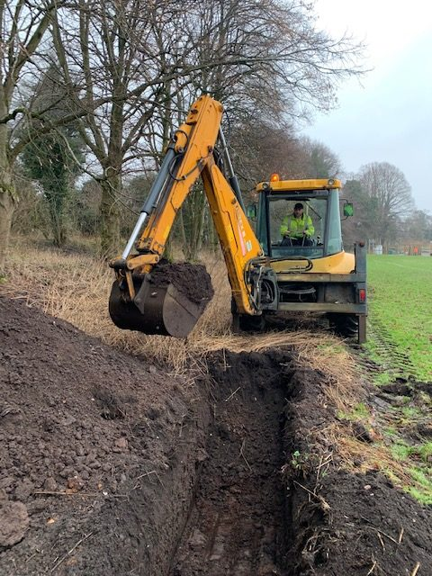
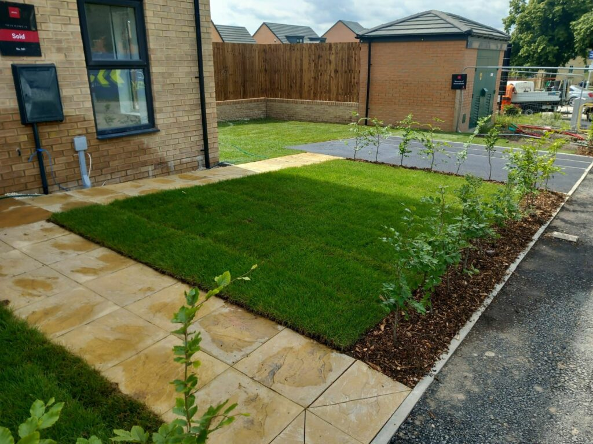
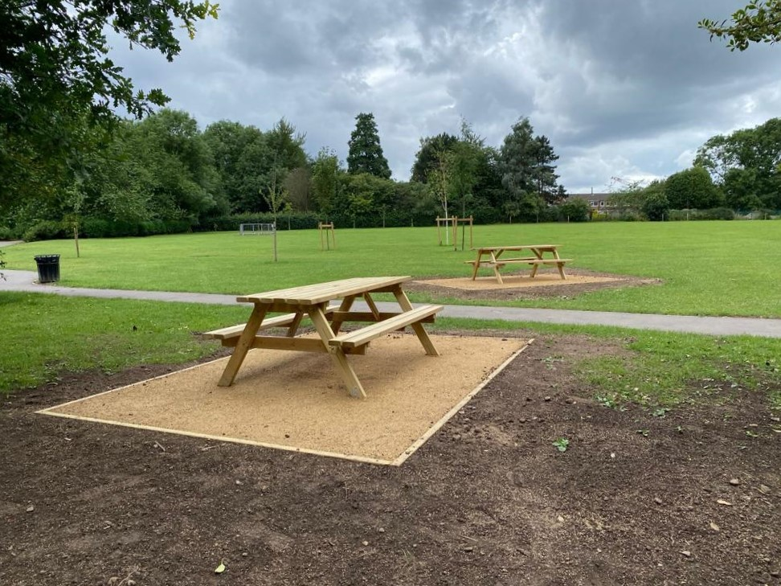
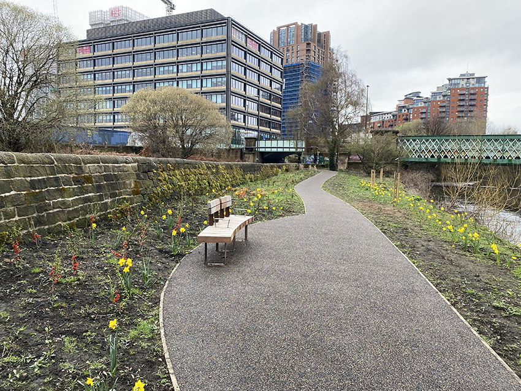
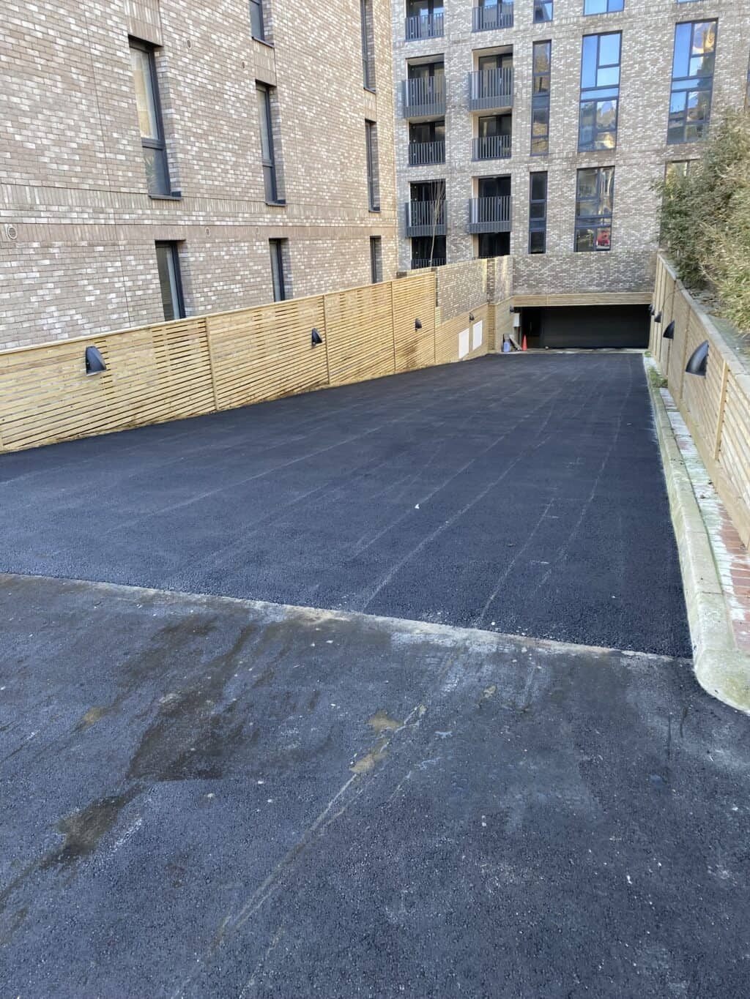

J Taylor provides groundwork services for domestic, commercial and agricultural projects throughout the surrounding area.
From foundations and drainage to excavation and farm-related work, every project is approached with care, reliability and attention to detail.

Excavation and preparation for extensions, new builds and outbuildings.
Drainage trenches, soakaways, land drainage and water management.
Ground preparation, digging and earthworks using modern machinery.
Preparation and installation of driveways, hardstanding and access areas.
Farm tracks, yards, drainage and rural groundwork.
Preparing land ready for construction or improvement.
A selection of groundwork projects completed locally.




Based at Budds Farm, Aston le Walls, J Taylor has built a reputation through reliable workmanship and recommendations from local customers.
Whether working on a private project, building work or agricultural requirements, the focus is simple: do the job properly and leave it right.